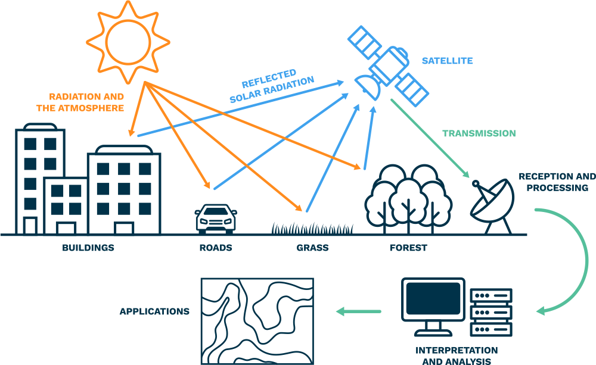
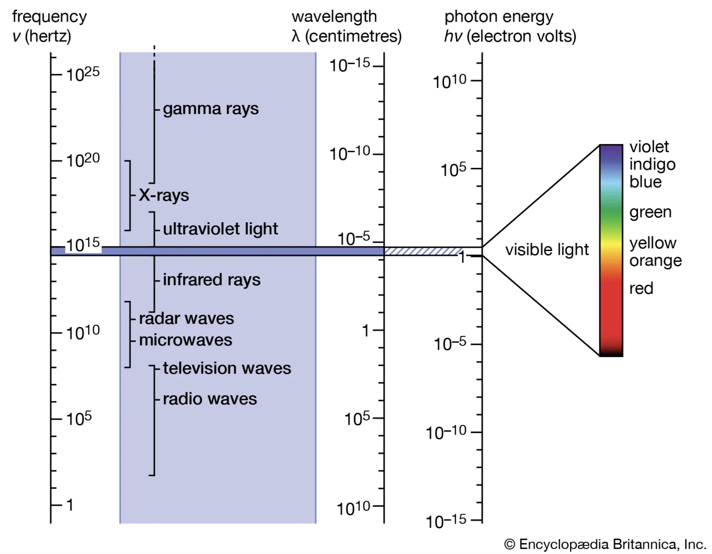
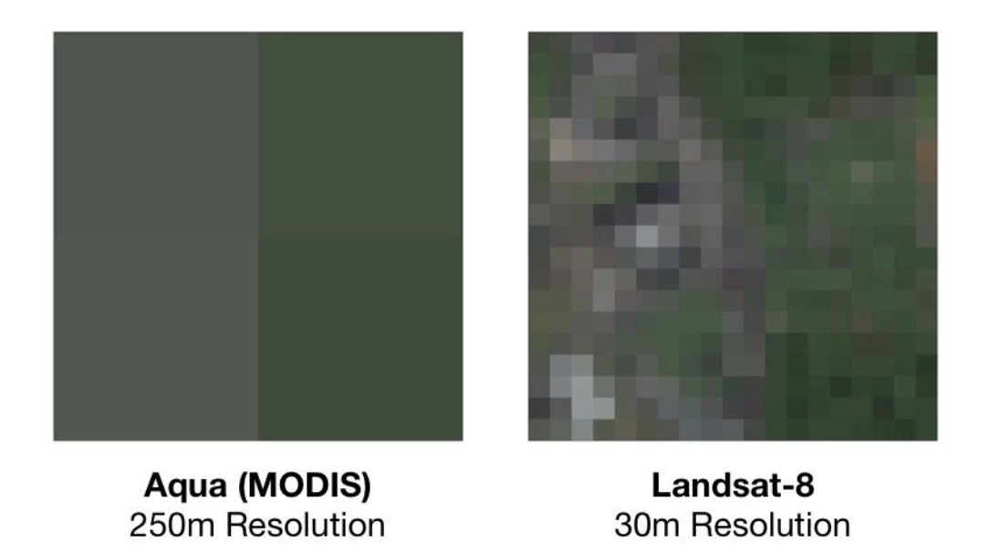
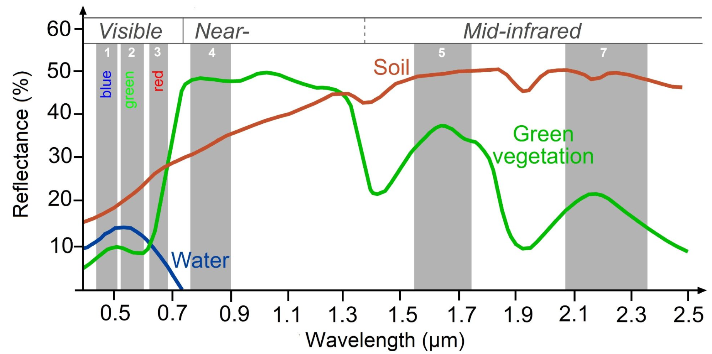
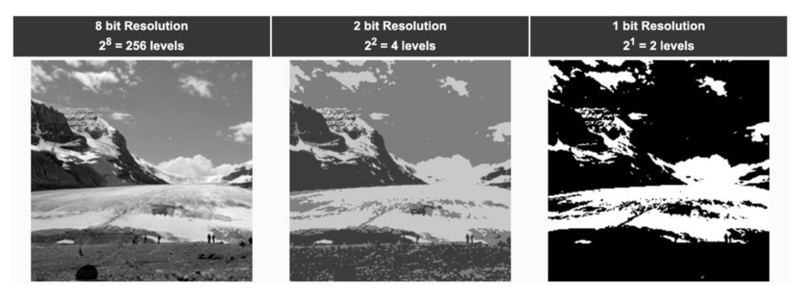

Introduction to Remote Sensing and Google Earth Engine
Acknowledgment: I am grateful to Dr. Elinor Benami for the original lecture and lab materials, used here under the Creative Commons License (Attribution-NonCommercial-ShareAlike 4.0 International). Modifications have been made to the context and code of the original content.
0. What is Remote Sensing
Acquiring information from a distance—particularly when information is derived from radiation in one or more parts of the electromagnetic spectrum, either reflected or emitted from the Earth’s surface.
Advantages of using remotely sensed data:
- Relatively inexpensive
- Systematic data collection
- Repetitive observations over time


1. Getting Started
Overview
The purpose of this workshop is to introduce the functionality and structure of Google Earth Engine (GEE) that may support your projects. This tutorial provides a brief overview of the GEE JavaScript interface (Code Editor), imagery data formats, the four types of sensor resolution, time series plots, and how to use RStudio to remotely access GEE resources. For the registration process, please use your personal Google account to access GEE.
Learning Outcomes
- Navigate basic Google Earth Engine (GEE) resources
- Describe the major GEE data types and their associated methods
- Create and visualize composites based on desired parameters
- Obtain climate-related data, land cover information, and vegetation indices
- Access GEE remotely through RStudio
Setting up an Account
To get started, sign up for Google Earth Engine. Registration is free and straightforward, but it takes approximately 24 hours to be approved to use the code editor.
Importing data
In addition to providing access to petabytes of satellite imagery and geospatial products, Google Earth Engine (GEE) also enables users to upload and work with their own raster, vector, and tabular data. These user-provided assets can be seamlessly integrated into analyses. This process is automatically linked to the Google Drive account associated with the GEE user account.
Note that most commonly used export formats in GEE are .tif, .shp, .geojson and .csvfiles
GEE processes on Google Cloud Platform
When you open the Code Editor in your browser, you can write and run JavaScript code locally. To access GEE’s cloud computing resources, you can use server-side functions. For example, the ee prefix before the ImageCollection tells Earth Engine to process the data on its servers. Without that indicator, GEE will cede operations to the server. The satellite image collections listed below include sensors that capture climate variables, surface reflectance data, and processed (derived) products such as land cover classifications.
If we want to access climate-related data, including temperature and precipitation, we can use the MODIS Land Surface Temperature (LST) and write the following code:
var modisLST = ee.ImageCollection('MODIS/061/MOD11A1');To compute vegetation or surface indices using land surface reflectance data, we can use the Landsat8 Surface Reflectance data and implement the following code:
var landsat8Sr = ee.ImageCollection('LANDSAT/LC08/C02/T1_L2');To obtain a Land Use/Land Cover (LULC) dataset with class probabilities and label information for nine land cover types, we can use the Dynamic World V1 dataset and write the following code:
var dynamicv1 = ee.ImageCollection('GOOGLE/DYNAMICWORLD/V1');JavaScript
Several resources can help you in working with JavaScript.
Javascript.info provides a comprehensive guide; focus on Part I for this tutorial.
W3Schools offers clear explanations of individual JavaScript components.
JavaScript & JQuery is a well-designed book with fundamentals, illustrations, and practical examples.
2. Core Components of Google Earth Engine Operations
Most Google Earth Engine tutorials begin with an introduction to the data structures and the operations you can use to analyze your data structures. To work effectively with GEE, it is essential that you understand these core components and how to complete basic operations with each of them.
Core Data Structures in GEE
Image: A raster image, the fundamental data type in Earth Engine, often representing satellite data or other gridded variables.ImageCollection: A “stack” or sequence of images that share the same attributes (e.g., time series of satellite imagery).Geometry: Vector data representing spatial shapes (points, lines, polygons), either drawn within GEE or imported from external sources.Feature: Ageometrypaired with associated attribute data (e.g., a county boundary with associated land surface temperature values).FeatureCollection: A group of related features, often used to represent sets of regions, survey points, or administrative boundaries.Array: A flexible, multi-dimensional data structure for numerical analyses—useful but can be inefficient for large-scale operations.
Key Operations
Reducer: A method used to compute statistics or perform aggregations on the data over space, time, bands, arrays, and other data structures (e.g., calculating mean, max, or standard deviation).Join: A method to combine two datasets (ImageorFeaturecollections) based on shared attributes like time, location.
2.1 Images and Image Collections
Images
Images are Raster objects composed of one or more bands.
- Each band is essentially a layer of data with a unique:
- Name: A unique identifier for the band
- Data type: Specifies the format (e.g., integer, float)
- Scale: The spatial resolution (e.g., meters per pixel)
- Mask: Indicates which pixels are valid or missing
- Projection: Defines how the image is georeferenced
- Metadata, stored as a set of properties for that band.
You can create images from constants (e.g., a fixed value across space), lists, or other objects. In the code editor “Docs” tab, you’ll find numerous processes that can be applied to images (e.g. masking, scaling, or visualizing).
Do not confuse an individual image with an image collection. An Image refers to a single raster dataset, whereas an ImageCollection is a set of images grouped together, most often as a time series, and often known as a stack.
Image Collections
The code below is an established method of extracting one individual image from an image collection. You can copy and paste this code into the GEE code editor.
On the first line, we see that we are creating a JavaScript variable named collection and assign it a Landsat 8 surface reflectance image collection. Then we use ee before ImageCollection to tell GEE to access data from its cloud-based servers. The dataset ‘LANDSAT/LC08/C02/T1_L2’ is the Landsat 8 Collection 2 Tier 1 Surface Reflectance product, which provides atmospherically corrected reflectance data from the OLI and TIRS sensors.
The following steps further refine the extraction of an image from an image collection.
.selectselects the specific band from each image in the collection..filterBoundsfilters data to the area specified, in this case a geometry Point that was created within GEE..filterDatenarrows the collection to images captured within a specific date range..firstis a JavaScript method of choosing the first image from a (potentially sorted) list. Often used after sorting by cloud cover to get the clearest image.
Map.centerObject() centers the map on the image, and the number is the amount of zoom. The higher that value is, the more zoomed in the image is - this often requires some trial-and-error to find a good fit.
Map.addLayer() adds the visualization layer to the map. Each image or image collection has unique band names, so always refer to the documentation for the correct ones. GEE uses Red-Green-Blue band order for true-color visualization. min and max are the values that normalize the value of each pixel to the conventional 0-255 color scale. In this case, although the maximum value of a pixel in all three of those bands is 2000, for visualization purposes GEE will normalize that to 255, the max value in a standard 8-bit image.
There is a comprehensive guide on imagery visualization covers topics like false-color composites, mosaicking, and single-band display.
// Load the Landsat 8 Tier 1 L2 SR
var collection = ee.ImageCollection('LANDSAT/LC08/C02/T1_L2')
.filterBounds(ee.Geometry.Point(-80.4139, 37.2296))
.filterDate('2024-01-01', '2024-01-31')
.sort('CLOUD_COVER'); // lowest cloud cover first
var first = collection.first(); // Select the first (least‐cloudy) image
Map.centerObject(first, 8); // Center the map on that image
// Display the true-color SR bands
Map.addLayer(first, {bands: ['SR_B4', 'SR_B3', 'SR_B2'], min: 0, max: 3000}, 'first');Sensed versus Derived Imagery
GEE provides a rich suite of dataset, and while many of them are traditional sensed imagery, others are derived dataset. For instance, the Dynamic World dataset is generated from Sentinel-2 Level 1C imagery using machine learning. If you explore its “Band” information, you’ll find refined land cover classes representing specific surface types. Datasets like this often require different visualization techniques or approaches for mosaicking compared to raw imagery.
The code below uses the Dynamic World dataset to visualize land cover centered at Blacksburg from June to August 2024. Cropland (Class 4) is highlighted in green, and a full land cover layer displaying all nine classes is also included.
// Load the Dynamic World Image
var point = ee.Geometry.Point(-80.4139, 37.2296);
var dwCollection = ee.ImageCollection('GOOGLE/DYNAMICWORLD/V1')
.filterBounds(point) // Filter to the Blacksburg
.filterDate('2024-06-01', '2024-08-31');
// Check if the collection contains any images for the period and location
var collectionSize = dwCollection.size();
// If images are found, create a composite and classify
if (collectionSize.gt(0)) { // Check if there's at least one image
// Dynamic World provides a 'label' band with the top classification.
var dwImage = dwCollection.select('label').mode(); // Get the most frequent class
// Dynamic World classification: class 4 = Crops
var agriculture = dwImage.eq(4); // Binary image: 1 = cropland, 0 = other
// Define visualization parameters
var visParams = {
min: 0,
max: 1,
palette: ['white', 'red'] // non-agriculture = white, agriculture = green
};
// Center the map on the point of interest with an appropriate zoom level
Map.centerObject(point, 10); // Zoom level 10 is a suggestion, adjust as needed
Map.addLayer(agriculture.selfMask(), visParams, 'Dynamic World Cropland (Class 4)');
// Map.addLayer(agriculture, visParams, 'Dynamic World Cropland (Class 4)');
// Show both agriculture and non-agriculture lands
// Add the Dynamic World composite label layer to see all classes
var dwVisParams = {
min: 0,
max: 8, // Dynamic World has 9 classes (0-8)
palette: [
'#419BDF', // Water
'#397D49', // Trees
'#88B053', // Grass
'#7A87C6', // Flooded vegetation
'#E49635', // Crops
'#DFC35A', // Shrub and scrub
'#C4281B', // Built area
'#A59B8F', // Bare ground
'#B39FE1' // Snow and ice
]
};
Map.addLayer(dwImage, dwVisParams, 'Dynamic World Labels (Mode)', false); // Add as a hidden layer initially // The most likely reason no color appears in the image is cloud cover during the selected date range.
// Center the map on the point of interest even if no data is found
Map.centerObject(point, 9);
}
// Add the point of interest to the map to verify location
Map.addLayer(point, {color: 'green'}, 'Point of Interest');2.2 Geometries
Google Earth Engine (GEE) handles vector data using the Geometry type. While it generally follows the traditional forms of vector data—Points, Lines, and Polygons—GEE includes some additional structure and terminology:
Point: A single location defined by latitude and longitude.LineString: A connected list of points that does not start and end at the same location; represents a linear path.LinearRing: A closed version of a LineString that starts and ends at the same location; used to define polygon boundaries.Polygon: A list of LinearRings. The first LinearRing defines the outer boundary (shell), and any additional LinearRings define interior holes (e.g., lakes or islands within the polygon).
GEE also recognizes MultiPoint, MultiLineString and MultiPolygon, which are simply collections of more than one element. Additionally, you can combine any of these together to form a MultiGeometry.
Once you have a set of geometries, there are geospatial operations you can use for analysis, such as building buffer zones, area analysis, converting geometries to raster format (rasterization), etc. The documentation contains some basic examples to show you how to get started, although there are many more functions listed under the ‘Docs’ tab in the Code Editor.
The following code demonstrates how to define a 30 km radius around a point in Blacksburg and compare urban area changes over time using imagery from both LandSat 5 and LandSat 8. Landsat 5 provides historical data from 1984 to 2012, while Landsat 8 covers the period from 2013 to the present. To ensure a meaningful visual comparison, specific bands were selected from each satellite that are compatible in terms of wavelength and resolution.
// Setup: Blacksburg coordinates and Region of Interest (ROI)
var blacksburgPoint = ee.Geometry.Point([-80.4139, 37.2296]); // Longitude, Latitude
var roi = blacksburgPoint.buffer(30000); // 30km radius buffer
// Center the map on the ROI
Map.centerObject(roi, 9); // Zoom level 9 is a good starting point for 50km radius
// Define Time Periods
var earlyPeriod = {
start: '2000-01-01',
end: '2004-12-31',
label: '2000-2004'
};
var recentPeriod = {
start: '2019-01-01',
end: '2023-12-31',
label: '2019-2023'
};
// Image Preparation Function (Scaling and Cloud Masking for Landsat Collection 2 Level 2)
function prepLandsatC2L2(image) {
// Apply scaling factors to optical bands.
// See: https://developers.google.com/earth-engine/datasets/catalog/LANDSAT_LC08_C02_T1_L2#bands
var opticalBands = image.select('SR_B.').multiply(0.0000275).add(-0.2);
// Note: Thermal bands (ST_B*) would need different scaling if used.
// Cloud and shadow masking using QA_PIXEL band
// Bits (binary digits): 1 (Dilated Cloud), 3 (Cloud), 4 (Cloud Shadow), often used to encode quality flags for each pixel
// For example, if a pixel's QA value is 20, its binary representation is 10100.
// Reading from right to left (bit 0 to bit 4):
// Bit 0: (unused), Bit 1: Dilated Cloud = 0, Bit 2: (unused), Bit 3: Cloud = 1, Bit 4: Cloud Shadow = 1
// This means the pixel is flagged for both cloud and cloud shadow.
var qa = image.select('QA_PIXEL');
var dilatedCloudBit = 1 << 1;
var cloudBit = 1 << 3;
var cloudShadowBit = 1 << 4;
// Mask should be 0 for clear conditions.
var mask = qa.bitwiseAnd(dilatedCloudBit).eq(0)
.and(qa.bitwiseAnd(cloudBit).eq(0))
.and(qa.bitwiseAnd(cloudShadowBit).eq(0));
// Add scaled optical bands back to the image and apply the mask.
// Select only the scaled optical bands for the composite.
return image.addBands(opticalBands, null, true)
.updateMask(mask)
.select(['SR_B1', 'SR_B2', 'SR_B3', 'SR_B4', 'SR_B5', 'SR_B7'], // L5 bands
['SR_B1', 'SR_B2', 'SR_B3', 'SR_B4', 'SR_B5', 'SR_B7']); // L8 bands
}
// Load and Process Early Period Imagery (Landsat 5)
var l5Collection = ee.ImageCollection('LANDSAT/LT05/C02/T1_L2')
.filterBounds(roi)
.filterDate(earlyPeriod.start, earlyPeriod.end)
.map(prepLandsatC2L2);
var earlyComposite = l5Collection.median().clip(roi);
// Load and Process Recent Period Imagery (Landsat 8)
// Can also use LANDSAT/LC09/C02/T1_L2 or merge L8 and L9 for more data.
var l8Collection = ee.ImageCollection('LANDSAT/LC08/C02/T1_L2')
.filterBounds(roi)
.filterDate(recentPeriod.start, recentPeriod.end)
.map(prepLandsatC2L2);
var recentComposite = l8Collection.median().clip(roi);
// Define Visualization Parameters for True Color
// Reflectance values typically range from 0 to 1 after scaling.
// We display values between 0.0 and 0.35 (or 0.4) for good contrast.
var trueColorVisParams = {
min: 0.0,
max: 0.35, // Adjusted for better urban brightness
};
var l5TrueColorVis = {
bands: ['SR_B3', 'SR_B2', 'SR_B1'], // Red, Green, Blue for Landsat 5
min: trueColorVisParams.min,
max: trueColorVisParams.max
};
var l8TrueColorVis = {
bands: ['SR_B4', 'SR_B3', 'SR_B2'], // Red, Green, Blue for Landsat 8
min: trueColorVisParams.min,
max: trueColorVisParams.max
};
// Add Layers to Map
Map.addLayer(earlyComposite, l5TrueColorVis, 'True Color ' + earlyPeriod.label + ' (L5)');
Map.addLayer(recentComposite, l8TrueColorVis, 'True Color ' + recentPeriod.label + ' (L8)');
// Add ROI outline to the map
var empty = ee.Image().byte(); // Create an empty image
var roiOutline = empty.paint({
featureCollection: roi,
color: 1, // arbitrary color, won't be shown
width: 2 // outline width
});
Map.addLayer(roiOutline, {palette: 'FF0000'}, '50km Radius ROI'); // Red outline
// Print information to the console (optional)
print('Early Period Composite (Landsat 5):', earlyComposite);
print('Recent Period Composite (Landsat 8):', recentComposite);
print('Region of Interest (50km radius around Blacksburg):', roi);2.3 Features and Boundries
Features
At the most basic definition, a Feature in GEE is an object which stores a geometry property (Point, Line, Polygon) along with it’s associated properties. GEE uses the GeoJSON format to store and transmit these features.
Suppose we create an individual point that we want to associate with collected data. Based on the defined point variable, we can generate a surrounding square geometry and then create a feature using that geometry. The feature is assigned attribute values—in this case, latitude, longitude, and agricultural status. The resulting variable, agriculture, stores both the spatial information and the descriptive data for that location.
// Define the point and square polygon centered at Blacksburg
var point = ee.Geometry.Point(-80.4139, 37.2296);
var squareSize = 5000; // meters
var square = point.buffer(squareSize).bounds();
Map.addLayer(square, {color: 'red'}, 'Analysis Square');
Map.centerObject(square, 13);
// Load Dynamic World and compute mode composite
var startDate = '2024-06-01';
var endDate = '2024-08-31';
var dwCollection = ee.ImageCollection('GOOGLE/DYNAMICWORLD/V1')
.filterBounds(square)
.filterDate(startDate, endDate);
var dwImage = dwCollection.select('label').mode();
var agriculture = dwImage.eq(4); // 1 = Cropland
Map.addLayer(agriculture.selfMask(), {palette: ['green']}, 'Cropland Mask');
// Reduce to histogram
var cropStats = agriculture.reduceRegion({
reducer: ee.Reducer.frequencyHistogram(),
geometry: square,
scale: 10,
maxPixels: 1e8
});
// Evaluate and create a Feature
cropStats.evaluate(function(result) {
var histogram = result.label || {};
var cropPixels = histogram['1'] || 0;
var nonCropPixels = histogram['0'] || 0;
var total = cropPixels + nonCropPixels;
var cropPercent = total > 0 ? (cropPixels / total) * 100 : 0;
// Print results
print('Cropland Pixels:', cropPixels);
print('Cropland Coverage (%):', cropPercent.toFixed(2));
// Create an ee.Feature with square geometry and attributes
var labeledFeature = ee.Feature(square, {
site_name: 'Point of Interest Alpha',
latitude: point.coordinates().get(1),
longitude: point.coordinates().get(0),
start_date: startDate,
end_date: endDate,
crop_pixels: cropPixels,
non_crop_pixels: nonCropPixels,
total_pixels: total,
cropland_percent: cropPercent,
data_source: 'GOOGLE/DYNAMICWORLD/V1'
});
// Add it to a FeatureCollection so it can be exported or mapped
var fc = ee.FeatureCollection([labeledFeature]);
print('🧾 Feature with cropland coverage:', fc);
// Map visualization (colored point or polygon)
Map.addLayer(labeledFeature, {color: 'orange'}, 'Labeled Analysis Feature');
// Export to Google Drive as CSV
Export.table.toDrive({
collection: fc,
description: 'Cropland_Percent_Square_Polygon',
fileFormat: 'CSV'
});
});Once you have information in a Feature, you can filter it to find specific information, such as the name of an object or based on the size of a polygon, or provide aggregated analysis. The documentation on working with Feature Collections is comprehensive, and provides many ideas on how to use them efficiently in your analysis.
Boundaries
In Google Earth Engine, a boundary refers to the area represented by a polygon—commonly used to define the spatial extent for analyzing satellite or other geospatial data. Boundaries in GEE are stored as polygon geometries within ee.Feature or ee.FeatureCollection objects and can include additional attribute information.
You can either
- Load your own shapefiles or GeoJSONs as assets
- Import administrative boundaries, such as countries or counties, from GEE-hosted datasets
The following code loads the TIGER/Line state boundaries and specifically filters for the state of Virginia.
// Load TIGER/Line state boundaries from GEE
var states = ee.FeatureCollection('TIGER/2018/States');
var virginia = states.filter(ee.Filter.eq('NAME', 'Virginia')); // Filter to Virginia using its state FIPS code (51) or name
Map.centerObject(virginia, 7); // Set the zoom level to 7
Map.addLayer(virginia, {color: 'black'}, 'Virginia Boundary'); // Center the map and add the boundaryCombine the Pixels within A Certain Boundary
Combining or summarizing pixels within a specific boundary in GEE is a common task for extracting zonal statistics (e.g., mean NDVI within a county). This involves reducing the pixel-level data by region.
Key functions include:
ee.Reducer.mean()calculates the mean of pixel values.geometryorfeatureCollectiondefines the boundary/region.reduceRegion()orreduceRegions()to reduce data over one or multiple geometries.
The following code show the case to use MODIS (Terra Land Surface Temperature and Emissivity Daily Global 1km) to compute the weekly averaged Land Surface Temperature (LST) for the entire Virginia from January to March 2024.
We first collect temperature data from each pixel within the desired time period and overlay it with the state boundary. For each week, a mean LST image is computed, converted to Celsius, and multiplied by a fractional mask to isolate pixel values within the boundary. Pixels with at least 50% of their area inside the boundary are included in the analysis.The area-weighted mean is then calculated by dividing the sum of weighted LST values by the sum of the mask values.
// Load Virginia boundary
var states = ee.FeatureCollection('TIGER/2018/States');
var virginiaFc = states.filter(ee.Filter.eq('NAME', 'Virginia'));
var virginia = virginiaFc.geometry();
// Set time range
var startDate = ee.Date('2024-01-01');
var endDate = ee.Date('2024-03-31');
// Load MODIS Terra LST (daytime band)
var modis = ee.ImageCollection('MODIS/061/MOD11A1')
.select('LST_Day_1km')
.filterDate(startDate, endDate)
.filterBounds(virginia);
// Define spatial scales
var modisScale = 1000; // MODIS resolution
var fineScale = 100; // High-resolution mask scale
// Create high-resolution binary mask of Virginia
var highResMask = ee.Image.constant(1)
.clip(virginia)
.reproject({
crs: 'EPSG:4326',
scale: fineScale
});
// Compute fractional overlap at MODIS scale
var fracMask = highResMask
.reduceResolution({
reducer: ee.Reducer.mean(),
maxPixels: 1024
})
.reproject({
crs: 'EPSG:4326',
scale: modisScale
});
// Apply >= 50% inclusion threshold
var binaryMask = fracMask.gte(0.5); // 1 where >=50% of the pixel is inside the boundary; 0 elsewhere
// Determine weekly intervals
var nWeeks = ee.Number(endDate.difference(startDate, 'week')).ceil();
var weekList = ee.List.sequence(0, nWeeks.subtract(1));
// Loop over weeks and compute masked mean LST
var weeklyStats = ee.FeatureCollection(
weekList.map(function(i) {
i = ee.Number(i);
var wkStart = startDate.advance(i, 'week');
var wkEnd = wkStart.advance(1, 'week');
// Compute weekly average LST image in Celsius
var wkMeanImage = modis
.filterDate(wkStart, wkEnd)
.mean()
.multiply(0.02)
.subtract(273.15)
.rename('LST_mean_C');
// Apply binary mask using updateMask (removes pixels outside inclusion zone)
var maskedLST = wkMeanImage.updateMask(binaryMask);
// Compute mean LST only for included pixels
var meanLST = maskedLST.reduceRegion({
reducer: ee.Reducer.mean(),
geometry: virginia,
scale: modisScale,
maxPixels: 1e13
});
return ee.Feature(null, {
'week_start': wkStart.format('YYYY-MM-dd'),
'week_end': wkEnd.format('YYYY-MM-dd'),
'LST_mean_C': meanLST.get('LST_mean_C')
});
})
);
// Print results
print('Weekly weighted mean LST (°C) for Virginia, Jan–Mar 2024', weeklyStats);
// Export to Drive
Export.table.toDrive({
collection: weeklyStats,
description: 'Virginia_Weekly_LST_Thresholded',
fileNamePrefix: 'Virginia_Weekly_LST_50pctMask_JanMar2024',
fileFormat: 'CSV'
});2.4 Arrays
Arrays are structured collections of data elements stored in a defined order, often in contiguous memory. A one-dimensional array is a simple list of values, while multi-dimensional arrays organize data in grids or higher-order structures. A two-dimensional array is commonly known as a matrix, consisting of rows and columns. While terminology may vary across disciplines, understanding arrays is key to working with data structures in GEE.
Google Earth Engine is not optimized for general array-based math, and using arrays outside of its built-in functions can lead to poor performance. While there’s a helpful video on the engineering behind GEE, this workshop will only cover basic array transformations, such as aggregation and filtering. For complex array operations, it’s often better to export the data and use a specialized framework.
2.5 Methods: Reducers and Joins
Reducers
So far, we’ve worked with objects like Images, Features, and Geometries. Reducers are a method of aggregating data for analysis. For instance, we could take an Image Collection and use reducer to find the average value at each pixel, resulting in a single layer. Or we could reduce an image to a set of regions, grouping similar data together to create a simplified map. Reducers can be applied to both Images and Features, with specific functions for each. They can also be combined to create analysis chains.
In the example below, the variable collection filters imagery for the year 2022 over a point in Blacksburg. The variable maxLST then uses a reducer to extract the maximum land surface temperature in Kelvin for that location.
// Load and filter the MODIS image collection.
var collection = ee.ImageCollection('MODIS/006/MOD11A2')
.select('LST_Day_1km')
.filterDate('2022-01-01', '2022-12-31');
var scaleAndMaskLST = function(image) {
var scaledLST = image.multiply(0.02); // MODIS LST values are stored as scaled integers; multiply them by 0.02 to convert to Kelvin.
var maskedLST = scaledLST.updateMask(
image.neq(0).and(image.gte(7500)).and(image.lte(65535)) // Exclude pixels with a value of 0, keep only pixels with scaled LST greater than 7500, and exclude values outside the valid MODIS range.
);
return maskedLST;
};
var processedCollection = collection.map(scaleAndMaskLST);
// Define a point for Blacksburg, VA (using coordinates from search results)
var blacksburg = ee.Geometry.Point(-80.4139, 37.2296);
// Reduce the collection to a single image representing the maximum LST
var maxLSTImage = processedCollection.reduce(ee.Reducer.max());
// Get the maximum LST value at the Blacksburg point
var maxLSTKelvin = maxLSTImage.reduceRegion({
reducer: ee.Reducer.max(),
geometry: blacksburg,
scale: 1000 // Use the MODIS resolution (1km)
}).get('LST_Day_1km_max');
// Convert Kelvin to Fahrenheit: F = (K - 273.15) * 9/5 + 32
var maxLSTFahrenheit = ee.Number(maxLSTKelvin)
.subtract(273.15)
.multiply(9)
.divide(5)
.add(32);
// Print the results
print('Maximum LST in Blacksburg (Kelvin):', maxLSTKelvin);
print('Maximum LST in Blacksburg (Fahrenheit):', maxLSTFahrenheit);There are hundreds of different operations for using Reducer, with the functions listed in the ‘Docs’ tab. Certain functions will only work with specific object types, but follow along with the Reducer will help you understand how to aggregate data and extract useful results. Getting familiar with Reducer is an essential component to working with GEE.
Join
This process links information from one dataset to another based on a shared attribute. For example, you can join a Landsat ImageCollection from early 2016 with a FeatureCollection of agriculture locations from the past decade, filtered to the same area. The Join keeps only relevant data, combining useful information from both sources. While there are different types of joins, the key idea is merging data meaningfully.
Although there are different types of joins, the process brings information together, keeping only relevant information. The documentation on Joins goes over specific examples and concepts, and it’s important to understand which type of join best fits your analysis. The three most common join types in GEE are:
- Left Join: Retains all records from the primary dataset and adds matching information from the secondary dataset when available.
- Inner Join: Keeps only the records where both the primary and secondary datasets have a matching entry.
- Spatial Join: Combines datasets based on geographic location (ie, keeping only the features from one dataset that fall within a specified buffer)
3. Physical Bases of Remote Sensing
Four Types of Resolution
- Spatial resolution: The size of the smallest object that can be detected (i.e., pixel size). 
- Temporal resolution: The frequency at which a sensor revisits the same location on Earth (i.e., revisit time or orbital period).
- Spectral resolution: The ability of a sensor to distinguish between different wavelengths (i.e., number and width of spectral bands). 
- Radiometric resolution: The sensor’s sensitivity to differences in signal intensity or reflectance (i.e., bit depth). 
Suppose we are working with Landsat 8 and want to find key details such as the image scale, the number of images within a specific time range, the number of bands, and the data type of each band (across four resolutions). We can either look up this information in the documentation or use the following code to extract it directly.
// Load a Landsat 8 image collection.
var collection = ee.ImageCollection('LANDSAT/LC08/C02/T1_L2');
// It's a good practice to filter by date or location for a specific image.
var image = collection.first();
// Here, I manually select the first image in the collection based on the internal ordering,
// which is typically the earliest image from the satellite (chronological).
// --- Spatial Resolution ---
// The nominal scale (in meters) of the image's default projection.
// For Landsat 8, most bands are 30 meters, the panchromatic band is 15 meters.
var spatialResolution = image.projection().nominalScale();
print('Spatial Resolution (nominal scale in meters):', spatialResolution);
// You can also get the resolution of specific bands.
// For example, band B4 (Red)
var bandB4 = image.select('SR_B4');
var spatialResolutionB4 = bandB4.projection().nominalScale();
print('Spatial Resolution for SR_B4 (Red band) in meters:', spatialResolutionB4);
// --- Temporal Resolution ---
// Landsat 8 has a nominal temporal resolution (revisit period) of 16 days.
// This is a characteristic of the satellite's orbit, not a property directly
// extractable from a single image object in GEE.
// However, you utilize this resolution when filtering image collections by date.
var temporalResolutionComment = 'Temporal Resolution: Landsat 8 has a nominal revisit period of 16 days.';
print(temporalResolutionComment);
// Example of how to use temporal resolution:
// Filtering the collection to see how many images are available within a 30-day window
var startDate = ee.Date('2023-01-01');
var endDate = startDate.advance(30, 'day');
var imagesIn30Days = collection.filterDate(startDate, endDate);
print('Number of images available in a 30-day window (illustrates temporal sampling):', imagesIn30Days.size());
// --- Spectral Resolution ---
// This refers to the number and width of the spectral bands.
// We can list the band names.
var bandNames = image.bandNames();
print('Spectral Bands (Names):', bandNames);
// To get more detailed spectral information (e.g., wavelength ranges, data types),
// inspect the 'bandTypes()' object. This object contains properties for each band,
// which may include 'wavelength_min', 'wavelength_max', 'data_type', etc.,
// if they are part of the dataset's metadata in GEE.
print('All image band properties (inspect this object for spectral details):', image.bandTypes());
// --- Radiometric Resolution ---
// This is typically indicated by the data type (e.g., int8, int16, float32).
// 'int16' means 16-bit radiometric resolution.
// Access the data_type property from the bandTypes() dictionary for SR_B4.
var bandTypesDict = image.bandTypes();
var srb4Type = bandTypesDict.get('SR_B4');
print('Radiometric Resolution (Data Type for SR_B4):', srb4Type);
print('Image Data Type (dictionary of all band types):', bandTypesDict);
// You can also check the data type of the entire image (which is a dictionary of all band types)
print('Image Data Type (overall, as a dictionary of band types):', image.bandTypes());
// Add the image to the map for visual inspection
Map.centerObject(image, 10);
Map.addLayer(image, {bands: ['SR_B4', 'SR_B3', 'SR_B2'], min: 0, max: 20000}, 'Landsat 8 True Color');Each pixel has a geographic coordinate system, defined relative to the axes of a coordinate reference system (CRS). In Earth Engine, the CRS is often referred to as a projection because it includes the model of the Earth’s shape (datum) and the mathematical transformation that maps a 3D shape onto a 2D surface. This projection determines how spatial data is represented on a flat map.
4. Time Series Plots
Data Preparation
The first step in analyzing time series data is to import the dataset of interest and plot it for a specific location. In this case, the region of interest is the NDVI in Blacksburg, VA.
We begin by loading the Landsat 8 collection and defining a point at the region of interest. Additionally, we will create a time field to support the time series analysis.
// Define the Landsat 8 Collection 2, Tier 1, Level 2 Surface Reflectance.
var landsat8Sr = ee.ImageCollection("LANDSAT/LC08/C02/T1_L2");
// Define the Region of Interest (ROI).
var roi = ee.Geometry.Point([-80.4139, 37.2296]);The function maskL8srClouds is a cloud-masking function that uses the Quality Assurance (QA) band of Landsat 8 to mask out pixels obscured by clouds. Note that this function is specific to Landsat 8; using other platforms will require a different approach.
// Function to cloud mask from the QA_PIXEL band of Landsat 8 SR data.
function maskL8srClouds(image) {
// Get the QA_PIXEL band.
var qa = image.select('QA_PIXEL');
// Bits 3 and 4 are cloud and cloud shadow respectively.
var cloudBitMask = 1 << 3; // Bit 3: cloud
var cloudShadowBitMask = 1 << 4; // Bit 4: cloud shadow
// Both flags should be off to indicate clear conditions.
var mask = qa.bitwiseAnd(cloudBitMask).eq(0)
.and(qa.bitwiseAnd(cloudShadowBitMask).eq(0));
// Apply the mask and scale reflectance bands.
// Select only the desired surface reflectance bands and then apply scaling.
return image.updateMask(mask)
.select(['SR_B2', 'SR_B3', 'SR_B4', 'SR_B5', 'SR_B6', 'SR_B7']) // Surface reflectance bands
.multiply(0.0000275) // Apply scale factor
.add(-0.2) // Apply offset
.copyProperties(image, ['system:time_start', 'system:index']); // Also copy system:index for better identification if needed
}Vegetation Index
We can use one of several indices to measure vegetation health, with the Normalized Difference Vegetation Index (NDVI) being one of the most widely used. NDVI is a well-known metric for quantifying vegetation vigor. For this region of interest, we expect strong seasonality and possibly a gradual linear trend over time. NDVI values range from -1 to 1. Higher values (typically 0.2 to 0.8) indicate healthy, green vegetation, while values near 0 or negative indicate barren land, water, clouds, or non-vegetated surfaces. \[NDVI = \frac{NIR - Red}{NIR + Red}\]
In the code block below, we create a function called addVariables that extracts the date of each image, calculates NDVI and adds it to an array. We can then use .map() to apply the two functions across the image collection, enabling us to build a time series model of our data.
// Use function to add variables for NDVI, time and a constant to Landsat 8 imagery.
function addVariables(image) {
var ndvi = image.normalizedDifference(['SR_B5', 'SR_B4']).rename('NDVI'); // Compute NDVI.
var time = ee.Image.constant(
image.date().difference(ee.Date('1970-01-01'), 'year')
).rename('time'); // Compute fractional year since 1970 and convert to image.
var constant = ee.Image(1).rename('constant'); // Constant band.
return image.addBands([ndvi, time, constant]); // Add all variables.
}
// Remove clouds, add variables and filter to the roi.
var processedLandsat = landsat8Sr
.filterBounds(roi)
.map(maskL8srClouds)
.map(addVariables);Agriculture Phenology
Phenology is the study of the relationship between vegetative growth and environmental conditions, often focusing on seasonal patterns of growth and decline. For instance, the crop calendar in Blacksburg, VA can serve as a useful reference for expected planting and harvest times. By plotting NDVI over the time period of interest, we can compare observed vegetation changes with the growing season to assess crop conditions.
Aerial imagery enhances agricultural analysis by providing high-resolution insights into crop conditions and land use patterns, especially when combined with local agricultural knowledge. For example, a farmer can use Landsat 8 imagery to calculate NDVI every 5 days during the growing season, helping to detect early signs of crop stress or disease. MODIS imagery can be used to monitor broader climate conditions, such as droughts. Additionally, the Dynamic World dataset can help track changes in agricultural land cover over time.
Data Visualization
To visualize the data, we will export a chart at the location of interest. We will add a linear trend line for reference.
// Plot a time series of NDVI at a single location.
var l8Chart = ui.Chart.image.series({
imageCollection: processedLandsat.select('NDVI'), // Select the 'NDVI' band for charting
region: roi,
reducer: ee.Reducer.mean(),
scale: 30, // Landsat 8 resolution
xProperty: 'system:time_start'
})
.setChartType('ScatterChart')
.setOptions({
title: 'Landsat 8 NDVI Time Series at ROI',
hAxis: {title: 'Date'},
vAxis: {title: 'NDVI'},
trendlines: {0: {color: 'CC0000'}}, // Add a trendline for the NDVI
lineWidth: 1,
pointSize: 3,
// Ensure the chart is not too large and is placed appropriately
height: 300,
width: 700
});
// Display the chart in the console.
print(l8Chart);Export Data as a CSV File to Google Drive
The code will export the NDVI time series to Google Drive. You can check the “Tasks” tab (on the right panel) and click “Run” to start the export.
// Create a FeatureCollection where each feature represents a date and its NDVI value.
var timeSeriesFeatures = processedLandsat.map(function(image) {
var stats = image.reduceRegion({
reducer: ee.Reducer.mean(), // Calculate the mean NDVI over the ROI
geometry: roi,
scale: 30, // Landsat resolution in meters
maxPixels: 1e9 // Allow for a large number of pixels
});
var ndviValue = ee.Algorithms.If(stats.contains('NDVI'), stats.get('NDVI'), null);
// Return a feature with the date and the NDVI value
return ee.Feature(null, {
'date': image.date().format('YYYY-MM-dd'),
'NDVI': ndviValue
});
})
.filter(ee.Filter.notNull(['NDVI']));
// Export the FeatureCollection to Google Drive as a CSV
Export.table.toDrive({
collection: timeSeriesFeatures,
description: 'NDVI_TimeSeries_ROI_Blacksburg', // Task description
//folder: 'GEE_Exports', // Optional: specify a folder in your Google Drive
fileNamePrefix: 'NDVI_TimeSeries_Blacksburg', // Prefix for the output file name
fileFormat: 'CSV'
});You can click on the “Export” button next to the chart to view an iteractive chart. Scroll over some of the data points and look at the relationships between them. A line connecting two dots indicates sequential data points, and note that there are relatively few of them. The chart shows noticeable jumps in the data, with an upward trend between March and late April, followed by a decline in late August. Although the pattern varies slightly each year, it likely reflects seasonal rains in the spring and leaf senescence in the fall. Overall, the general trend is upward.
Additional Resources
5. Raster Images v.s. Vector Images
Brief Summary
| Factor | Raster | Vector |
|---|---|---|
| Data Type | Continuous | Discrete |
| Spatial Resolution | Critical | Less important |
| File Size | Usually large | Smaller |
| Processing Complexity | High (especially time-series) | Moderate to high for large datasets |
| Preferred Tools | GEE, GDAL, QGIS, ArcGIS | QGIS, GeoPandas, ArcGIS |
| File Format and Metadata | .tif, .tiff, .img, .nc |
.shp, .json , GeoPandas |
Note: .csv: Needs geocoding to use spatially. Limited spatial metadata.
Analytical Capability
| Raster Analysis | Vector Analysis |
|---|---|
| Classification (e.g., land cover) | Spatial joins and overlays |
| Time-series change detection | Buffer, centroid, and intersection |
| Zonal statistics | Network or routing analysis |
| Image differencing, band math | Attribute filtering, labeling |
Practical Examples
| Scenario | Best Image Type | Reason |
|---|---|---|
| Estimating vegetation health (NDVI) | Raster | Allows pixel-wise index computation |
| Mapping children’s health care program | Vector | Discrete boundaries needed |
| Calculating average temperature per county | Raster + Vector | Overlay raster temperature on polygon |
| Web-based mapping | Vector | Lightweight and browser-compatible |
6. Find a Suitable Remote Sensing Data
To find a suitable satellite (remote sensing) dataset for your project:
- Variables of intereset: NDVI, LST, land cover, precipitation, pollutants, urban extent, etc.
- Data Quality: reported noise, cloud issues, or atmospheric interference, published accuracy assessment? Check preprocessing and accessibility in Literature
- Spatial resolution: e.g., household-level ( 10–30m) vs regional (¿250m)
- Temporal resolution: daily, weekly, monthly, or annual?
- Time span: historical baseline, near real-time, or future projections?
- Data type: raster (imagery), vector (features), tabular (summary)
Optional: Set GEE API through RStudio
O.1. Set Python environment in terminal
# Create the virtual environment
python3 -m venv gee-env
# Activate it
source gee-env/bin/activate
# Check if the directory actually exists
ls ~
# Change into home directory’s subfolder called GEE
cd ~/gee-env
# Install GEE API
pip install --upgrade earthengine-api numpy pandas
earthengine authenticate
# Follow the URL it prints, grant access in a browser, then paste the verification code back into terminal. Will show "Successfully saved authorization token."
# Test with
python - <<EOF
import ee
ee.Initialize()
print("GEE initialized:", ee.data.getAssetRoots())
EOFO.2. Connect RStudio with existing python environment
# install.packages("remotes")
remotes::install_github("r-spatial/rgee")
# Set system Python
Sys.setenv(RETICULATE_PYTHON = "~/gee-env/bin/python")
# Check Python version available to R, make sure R version is 4.3.3 or higher
# install.packages("reticulate")
library(reticulate)
use_python("~/gee-env/bin/python", required = TRUE)
py_config()
# If R has already been initialized a python version, restart R (Session > Restart R) and rerun the code
# Verify that GEE API is installed
py_module_available("ee")
# If false, go to the terminal and run
# source ~/gee-env/bin/activate
# pip install --upgrade earthengine-api numpy pandas six
#
# # Verify the import
# python - <<EOF
# import ee; print("EE version:", ee.__version__)
# import numpy; print("NumPy version:", numpy.__version__)
# import pandas; print("pandas version:", pandas.__version__)
# import six; print("six version: ", six.__version__)
# EOF
# # If no error
# deactivate
# Load rgee
library(rgee)
# Check that rgee sees earthengine-api (and its Python deps)
ee_check_python()
# If it comes with error, check each package manually
# 1. Import Earth Engine
ee_module <- try(import("ee"), silent = TRUE)
if (inherits(ee_module, "try-error")) {
cat("Cannot import earthengine-api (ee).\n")
} else {
vers <- ee_module$`__version__`
cat("ee __version__:", vers, " (type:", typeof(vers), ")\n")
}
# 2. Import NumPy
np_module <- try(import("numpy"), silent = TRUE)
if (inherits(np_module, "try-error")) {
cat("Cannot import numpy.\n")
} else {
vers <- np_module$`__version__`
cat("numpy __version__:", vers, " (type:", typeof(vers), ")\n")
}
# 3. Import pandas
pd_module <- try(import("pandas"), silent = TRUE)
if (inherits(pd_module, "try-error")) {
cat("annot import pandas.\n")
} else {
vers <- pd_module$`__version__`
cat("pandas __version__:", vers, " (type:", typeof(vers), ")\n")
}
# 4. Import six
six_module <- try(import("six"), silent = TRUE)
if (inherits(six_module, "try-error")) {
cat("Cannot import six.\n")
} else {
vers <- six_module$`__version__`
cat("six __version__:", vers, " (type:", typeof(vers), ")\n")
}
# Authenticate & Initialize Google Earth Engine (first time opens a browser for OAuth)
ee_Authenticate() # Paste the token in R console
ee_Initialize() # If the folder already exists, press Esc to cancel the prompt
ee_Initialize(user = "account") # Manually set the user
# Manually create asset home (even though it exists—this call will simply confirm it)
ee$data$createAssetHome("users/account/newfolder")
# Verify that initialization succeeded
ee_user_info()$assetRoots
# ee_clean_user_credentials() Remove any cached/expired token
# Confirm your GEE account
ee_user_info()O.3. Set Google drive
install.packages("googledrive")
install.packages("googleCloudStorageR")
library(rgee) # ee_Initialize() is already successfully set
library(googledrive)
# This will open a browser window prompting you to sign in with your Google drive account.
drive_auth()
drive_auth(email = "your_email@gmail.com") # if no window prompted, manually set the account
# Test R can access Drive
drive_ls(path = as_id("root"), n_max = 5)
# Create a temporary file
tmp <- tempfile(fileext = ".txt")
writeLines("drive test", tmp)
# Upload it to your Drive root
drive_upload(media = tmp, path = as_id("root"), name = "rgee_drive_test.txt")
# Go to Google Drive to see if the text file existsO.4. To run GEE in the desired python path
rm(list = ls()) # clear R's workspace
# 1. Make sure reticulate uses the correct Python (your gee-env)
Sys.setenv(RETICULATE_PYTHON = "~/gee-env/bin/python")
library(reticulate)
use_python("~/gee-env/bin/python", required = TRUE)
py_config()
# 2. Load rgee, initialize Earth Engine, specifying your existing asset home
library(rgee)
ee_Initialize()
# 3. Write the R code to perform the following task using RStudio: load the TIGER/Line shapefile, filter specifically for the state of Virginia, and calculate the mean land surface temperature within Virginia using MODIS data (Convert the previous JavaScript code into equivalent R code).
# Define Virginia boundary (FeatureCollection -> Geometry)
states <- ee$FeatureCollection("TIGER/2018/States")
virginiaFc <- states$filter(ee$Filter$eq("NAME", "Virginia"))
virginia <- virginiaFc$geometry() # pure Geometry object of Virginia
# Set the date range as ee$Date objects
startDate <- ee$Date("2024-01-01")
endDate <- ee$Date("2024-03-31")
# Load daily MODIS Terra LST, select daytime band, filter by date and bounds
modis <- ee$ImageCollection("MODIS/061/MOD11A1")$
select("LST_Day_1km")$
filterDate(startDate, endDate)$
filterBounds(virginia)
# Define spatial scales
modisScale <- 1000
fineScale <- 100
# Create high-resolution binary mask of Virginia
highResMask <- ee$Image$constant(1)$
clip(virginia)$
reproject(crs = "EPSG:4326", scale = fineScale)
# Compute fractional overlap at MODIS scale
fracMask <- highResMask$
reduceResolution(
reducer = ee$Reducer$mean(),
maxPixels = 1024
)$
reproject(crs = "EPSG:4326", scale = modisScale)
# Apply >= 50% threshold to create binary inclusion mask
binaryMask <- fracMask$gte(0.5)
# Compute number of whole weeks in the period (ceiling of difference in weeks)
n_weeks <- endDate$difference(startDate, "week")$ceil()$getInfo()
weekList <- 0:(n_weeks - 1)
# Map over each week index to compute weekly mean (°C) and package as a Feature
weeklyFeatures <- lapply(weekList, function(i) {
wkStart <- startDate$advance(i, "week")
wkEnd <- wkStart$advance(1, "week")
# Compute mean image for the week
wkMeanImage <- modis$
filterDate(wkStart, wkEnd)$
mean()$
multiply(0.02)$
subtract(273.15)$
rename("LST_mean_C")
# Masked image using ≥50% inclusion
maskedLST <- wkMeanImage$updateMask(binaryMask)
# Reduce mean over valid region
meanLST <- maskedLST$reduceRegion(
reducer = ee$Reducer$mean(),
geometry = virginia,
scale = modisScale,
maxPixels = 1e13
)
# Create feature with week metadata
ee$Feature(NULL, ee$Dictionary(list(
week_start = wkStart$format("YYYY-MM-dd"),
week_end = wkEnd$format("YYYY-MM-dd"),
LST_mean_C = meanLST$get("LST_mean_C")
)))
})
# Create FeatureCollection
weeklyFC <- ee$FeatureCollection(weeklyFeatures)
# Print the results (Client-side view of the metadata)
print(weeklyFC$limit(5)$getInfo()) # Show the first five mean LST
# Export the FeatureCollection as a CSV to Google Drive
task <- ee$batch$Export$table$toDrive(
collection = weeklyFC,
description = "Virginia_Weekly_LST_Masked_JanMar2024",
folder = "rgee_exports",
fileFormat = "CSV",
fileNamePrefix = "Virginia_Weekly_LST_Masked_JanMar2024"
)
# Export task
task$start() # Can also click the task tab on GEE
ee_monitoring(task) # Monitor task statusO.5. Use rgee inside Shiny apps
To remotely compute the mean weekly MODIS land surface temperature (LST) over Virginia using the rgee package, and to display both the histogram and the computed weekly LST in an R Shiny app, you can use the following code. To enable automatic updates, set the end date to the most recent available MODIS observation using the first() function and calculate the start date accordingly. Make any modifications if you like.
rm(list = ls(all = TRUE))
library(shiny)
library(rgee)
library(ggplot2)
# Set python environment and initialize Earth Engine
Sys.setenv(RETICULATE_PYTHON = "~/gee-env/bin/python")
library(reticulate)
use_python("~/gee-env/bin/python", required = TRUE)
py_config()
ee_Initialize()
# Prepare GEE Data -------------------------------------
# (Similar as before, compute the mean LST within Virginia using MODIS data)
# Virginia boundary
states <- ee$FeatureCollection("TIGER/2018/States")
virginiaFc <- states$filter(ee$Filter$eq("NAME", "Virginia"))
virginia <- virginiaFc$geometry()
# Date range
# Get the latest available date in MODIS/061/MOD11A1
modis_latest_img <- ee$ImageCollection("MODIS/061/MOD11A1")$
sort("system:time_start", FALSE)$
first()
# Extract date from the image metadata
endDate <- ee$Date(modis_latest_img$get("system:time_start"))
# Set startDate as 12 weeks (84 days) ago
startDate <- endDate$advance(-84, "day")
# MODIS LST ImageCollection
modis <- ee$ImageCollection("MODIS/061/MOD11A1")$
select("LST_Day_1km")$
filterDate(startDate, endDate)$
filterBounds(virginia)
# Scales
modisScale <- 1000
fineScale <- 100
# Binary mask using fractional overlap
highResMask <- ee$Image$constant(1)$
clip(virginia)$
reproject(crs = "EPSG:4326", scale = fineScale)
fracMask <- highResMask$
reduceResolution(reducer = ee$Reducer$mean(), maxPixels = 1024)$
reproject(crs = "EPSG:4326", scale = modisScale)
binaryMask <- fracMask$gte(0.5)
# Get weekly results
n_weeks <- endDate$difference(startDate, "week")$ceil()$getInfo()
weekList <- 0:(n_weeks - 1)
weeklyFeatures <- lapply(weekList, function(i) {
wkStart <- startDate$advance(i, "week")
wkEnd <- wkStart$advance(1, "week")
wkMeanImage <- modis$
filterDate(wkStart, wkEnd)$
mean()$
multiply(0.02)$
subtract(273.15)$
rename("LST_mean_C")
maskedLST <- wkMeanImage$updateMask(binaryMask)
meanLST <- maskedLST$reduceRegion(
reducer = ee$Reducer$mean(),
geometry = virginia,
scale = modisScale,
maxPixels = 1e13
)
ee$Feature(NULL, ee$Dictionary(list(
week_start = wkStart$format("YYYY-MM-dd"),
week_end = wkEnd$format("YYYY-MM-dd"),
LST_mean_C = meanLST$get("LST_mean_C")
)))
})
weeklyFC <- ee$FeatureCollection(weeklyFeatures)
weekly_df <- weeklyFC$getInfo()$features
# Convert to R data frame
lst_df <- data.frame(
week_start = sapply(weekly_df, function(f) f$properties$week_start),
week_end = sapply(weekly_df, function(f) f$properties$week_end),
LST_mean_C = sapply(weekly_df, function(f) f$properties$LST_mean_C)
)
lst_df$week_start <- as.Date(lst_df$week_start)
# Shiny App -------------------------------------
ui <- fluidPage(
titlePanel("Weekly MODIS LST in Virginia (°C)"),
sidebarLayout(
sidebarPanel(
selectInput("week", "Choose a Week:", choices = lst_df$week_start)
),
mainPanel(
verbatimTextOutput("selected_temp"),
plotOutput("temp_plot")
)
)
)
server <- function(input, output) {
output$selected_temp <- renderPrint({
row <- lst_df[lst_df$week_start == input$week, ]
paste0("Mean Land Surface Temperature from ", row$week_start,
" to ", row$week_end, ": ", round(row$LST_mean_C, 2), " °C")
})
output$temp_plot <- renderPlot({
ggplot(lst_df, aes(x = week_start, y = LST_mean_C)) +
geom_col(fill = "steelblue") +
labs(x = "Week Start", y = "LST (°C)", title = "Weekly Mean MODIS LST Over Virginia") +
theme_minimal()
})
}
shinyApp(ui, server)O.6. Connect GEE data with NASS data
If the purpose of the project is to display both “Excellent” and “Good” corn conditions alongside mean LST data from MODIS for Virginia on a dashboard, we can first access NASS data through the API, filter for the specific corn conditions, and then merge the weekly corn condition data with the weekly mean LST.
Request for NASS’s API Key.
# install.packages("rnassqs")
library(rnassqs)
library(dplyr)
library(tidyr)
library(tibble)
# Authenticate
nassqs_auth(key = "Your_Own_API")
# Define the function
crop_data <- function(year = 2025) {
df <- nassqs(list(
commodity_desc = "CORN",
year = as.character(year),
state_name = "VIRGINIA",
statisticcat_desc = "CONDITION",
agg_level_desc = "STATE"
))
if (nrow(df) == 0) return(NULL)
df <- df %>%
filter(grepl("PCT", unit_desc)) %>% # broader filter
mutate(
week = as.Date(week_ending),
value = as.numeric(Value),
condition = case_when(
unit_desc == "PCT GOOD" ~ "GOOD",
unit_desc == "PCT EXCELLENT" ~ "EXCELLENT",
TRUE ~ NA_character_
)
)
# keep unique weeks
all_weeks <- df %>% distinct(week)
# keep only GOOD and EXCELLENT, pivot wider
good_ex_data <- df %>%
filter(!is.na(condition)) %>%
select(week, condition, value) %>%
pivot_wider(names_from = condition, values_from = value)
# Join all weeks back in and fill missing values with 0
full_data <- left_join(all_weeks, good_ex_data, by = "week") %>%
mutate(
GOOD = replace_na(GOOD, 0),
EXCELLENT = replace_na(EXCELLENT, 0),
good_excellent = GOOD + EXCELLENT
)
return(full_data)
}
nass_clean <- crop_data(2025)
# Inspect
head(nass_clean)
# Merge two dataset
lst_df <- lst_df %>%
mutate(week_end = as.Date(week_end)) # Make sure same "Date" format
merged_df <- left_join(nass_clean, lst_df, by = c("week" = "week_end")) # What might cause the NAs?
print(nass_clean$week)
print(lst_df$week_end)
# Fix: Align lst_df$week_end to the nearest Sunday
to_sunday <- function(date) {
date - as.integer(format(date, "%w"))
}
lst_df_sun <- lst_df %>%
mutate(week = to_sunday(as.Date(week_end)))
merged_df <- left_join(nass_clean, lst_df_sun, by = "week")
# Integrate the merged data into an R Shiny app ----------------------
library(shiny)
library(ggplot2)
library(dplyr)
# Ensure correct types
merged_df <- merged_df %>%
mutate(
week_char = as.character(week),
week = as.Date(week)
)
ui <- fluidPage(
titlePanel("Virginia Corn Condition vs. MODIS LST"),
sidebarLayout(
sidebarPanel(
sliderInput("week_range", "Select Week Range:",
min = min(merged_df$week),
max = max(merged_df$week),
value = c(min(merged_df$week), max(merged_df$week)),
timeFormat = "%Y-%m-%d"),
checkboxInput("show_table", "Show data table", value = FALSE)
),
mainPanel(
plotOutput("condition_plot"),
conditionalPanel(
condition = "input.show_table == true",
tableOutput("merged_table")
)
)
)
)
server <- function(input, output) {
filtered_data <- reactive({
merged_df %>%
filter(week >= input$week_range[1], week <= input$week_range[2])
})
output$condition_plot <- renderPlot({
df <- filtered_data()
ggplot(df, aes(x = week_char, group = 1)) +
geom_line(aes(y = good_excellent), color = "red", size = 1.2) +
geom_line(aes(y = LST_mean_C * 2), color = "blue", size = 1.2) +
scale_y_continuous(
name = "Good + Excellent Condition (%)",
sec.axis = sec_axis(~./2, name = "Mean LST (°C)")
) +
labs(
x = "Week Ending",
title = "Weekly Corn Condition (Red) vs. MODIS LST (Blue) in Virginia"
) +
theme_minimal() +
theme(axis.text.x = element_text(angle = 45, hjust = 1))
})
output$merged_table <- renderTable({
filtered_data() %>%
mutate(week = as.character(week)) %>% # Convert week to character
select(week, GOOD, EXCELLENT, good_excellent, LST_mean_C) %>%
arrange(week)
})
}
shinyApp(ui, server)O.7. Connect GEE data with ACS data
The purpose of the code below is to perform a spatial analysis of urban expansion and its relationship with housing characteristics within Montgomery County, Virginia. First, we retrieve detailed housing data (e.g., total units, occupancy, heating type, age of housing stock) for individual census tracts in Montgomery County.
Then we download the spatial boundary of Montgomery County from the US Census Bureau and convert it into a format usable by GEE. Next, we accesse Global Human Settlement Layer (GHSL) for both 2015 and 2020, specifically focusing on the built_surface band, which serves as a proxy for urban development. By subtracting the 2015 built surface values from the 2020 values, we calculate the change in urbanized areas and export the change map to Google Drive.
Finally, we can combine these two datasets by loading the exported urban change raster, reprojecting the census tract geometries to match its coordinate system, and then extracting the mean urban change value for each census tract.
Request for U.S. Census Bureau’s API Key.
rm(list = ls(all = TRUE))
# install.packages(c("rgee", "sf", "tidycensus", "dplyr"))
library(rgee)
library(dplyr)
library(sf) # for spatial operations
library(tidycensus) # for ACS data
Sys.setenv(RETICULATE_PYTHON = "~/gee-env/bin/python")
library(reticulate)
use_python("~/gee-env/bin/python", required = TRUE)
py_config()
# Initialize Earth Engine
ee_Initialize()
# Census part ---------------------------------
# Set your Census API key
# census_api_key("Your_Own_API", install = TRUE)
# Define variables (ACS 5-year 2020)
variables <- c(
total_units = "B25001_001",
occupied_units = "B25002_002",
vacant_units = "B25002_003",
heating_gas = "B25040_002",
heating_electricity = "B25040_003",
built_before_1980 = "B25034_006" # You can select multiple age bands
)
# Get tract-level data for Montgomery County, VA
va_housing <- get_acs(
geography = "tract",
variables = variables,
state = "VA",
county = "Montgomery",
year = 2020,
geometry = TRUE
)
# Reshape for usability
housing_data <- va_housing %>%
select(-moe) %>%
spread(variable, estimate)
# RS part -----------------------------------
# Download county boundary using tidycensus (sf object)
va_county <- get_acs(
geography = "county",
variables = "B01003_001", # total population (example)
state = "VA",
county = "Montgomery",
geometry = TRUE,
year = 2020
) %>%
st_transform(4326) # ensure it's in WGS84 (EPSG:4326)
# Convert sf to ee object
# install.packages("geojsonio")
library(geojsonio)
# Keep Only Geometry
va_county_geom <- va_county %>%
dplyr::select(geometry)
montgomery_ee <- sf_as_ee(va_county_geom)
# Get GHSL 2015 and 2020 impervious surfaces (urban indicator)
built_2015 <- ee$Image("JRC/GHSL/P2023A/GHS_BUILT_S/2015")$select("built_surface")
built_2020 <- ee$Image("JRC/GHSL/P2023A/GHS_BUILT_S/2020")$select("built_surface")
# Calculate difference to estimate urban expansion
urban_change <- built_2020$subtract(built_2015)
# Reduce Image Over County, Mean impervious surface change in the county
urban_stats <- urban_change$reduceRegion(
reducer = ee$Reducer$mean(),
geometry = montgomery_ee$geometry(),
scale = 30,
maxPixels = 1e13
)
# Print the result
urban_stats$getInfo()
# Export to Google Drive
task <- ee_image_to_drive(
image = urban_change,
description = 'urban_change_montgomery_5',
folder = 'GEE_exports',
fileNamePrefix = 'urban_change_5y_montgomery',
region = montgomery_ee$geometry(),
scale = 100
)
task$start()
ee_monitoring(task)
# Load Raster Map and Reproject ACS data -----------------------
# Load urban expansion raster, download the Raster map locally
library(terra)
urban_raster <- rast("figures/urban_change_5y_montgomery.tif")
plot(urban_raster, main = "Urban Change in Montgomery County")
# Reproject ACS geometries to match raster CRS
housing_data_proj <- st_transform(housing_data, crs = crs(urban_raster))
# Now you can extract zonal stats
library(exactextractr)
housing_data_proj$urban_change_mean <- exact_extract(urban_raster, housing_data_proj, 'mean')
# Save to GeoPackage or CSV
st_write(housing_data_proj, "montgomery_housing_urban.gpkg")
write_csv(st_drop_geometry(housing_data_proj), "montgomery_housing_urban.csv")